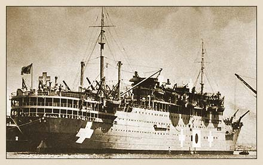

|
j
a v a s c r i p t |
November 8, 1943
A Spanish officer on the Teia Maru, probably on his way to Tokyo as military attaché, wanted to buy socks. He was escorted to the Osaka Bazaar, where he found out he needed ration points. A phone call to Murata solved the problem. He also wanted to phone the Spanish Ambassador here. Murata refused. A compromise was worked out: they met in the presence of Japanese officers and an interpreter, who ensured that prohibited subjects, such as local conditions, weren't discussed. A Swiss representative of the International Red Cross was also onboard but wasn't allowed to meet Bessmer of the IRC or Maurer of the Swiss Consulate. Maurer found him at the Manila Hotel cigar counter. With his back to the counter and pretending to talk to a wealthy 70 year-old German lady (a long-staying guest of the hotel), Maurer introduced himself and asked to exchange "only a few words." "I advise you to go away before we get into trouble," replied the IRC man. "It's impossible. The Japs have been watching me since I landed and I haven't had a free moment. You'd better go."

Japanese Repatriation Ship Teia-maru
(Currently under the Sulu Sea off Palawan) |
|
|
|
|